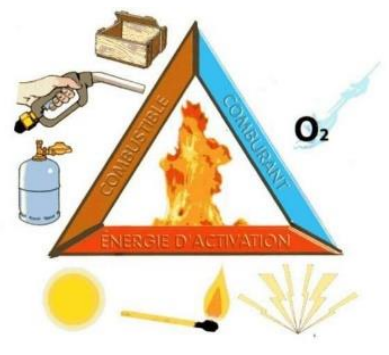
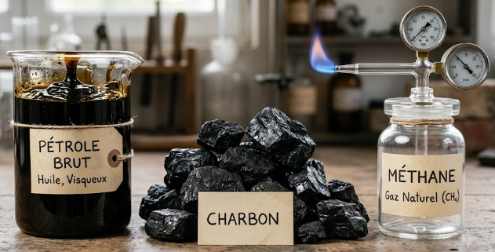
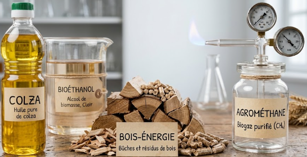
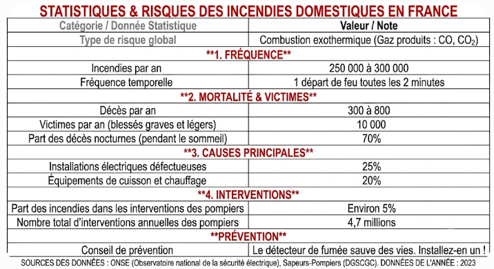
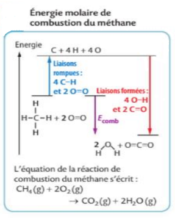

La réaction de combustion est une réaction d'oxydo-réduction au cours de laquelle un combustible s'oxyde et un comburant (généralement le dioxygène O₂(g)) se réduit. Cette réaction est activée si de l'énergie est apportée (énergie d'activation).
Elle est dite complète si les seuls produits formés sont de l'eau et du dioxyde de carbone.

Issus de la transformation de matière organique fossilisée depuis des millions d'années : pétrole, charbon, méthane, etc. Ils sont non renouvelables à l'échelle humaine.

Produits à partir de la biomasse : éthanol, ester méthylique de colza (biodiesel), agrométhane, bois, etc. Ils sont renouvelables à l'échelle humaine.

Dans le tableau ci-dessous, le gazole et l'essence sont issus de combustibles fossiles. L'ester méthylique et l'éthanol sont des biocarburants.
| Grandeur | Gazole | Essence | Ester méthylique | Éthanol |
|---|---|---|---|---|
| Pouvoir calorifique (en MJ·kg⁻¹) | 42,8 à 43,4 | 42,5 à 43,2 | 36,8 à 37,4 | 26,8 |
| Masse volumique (en kg·L⁻¹) | 0,75 | 0,84 | 0,89 | 0,79 |
| Teneur en carbone (en % massique) | 86,1 à 87,5 | 85 à 86,4 | 73,3 à 76,5 | 52,2 |
Étude réalisée par Écobilan pour l'ADEME, 2019.
On remarque que les biocarburants (ester méthylique, éthanol) présentent un pouvoir calorifique et une teneur en carbone plus faibles que les combustibles fossiles : ils libèrent un peu moins d'énergie par kilogramme, mais rejettent aussi moins de dioxyde de carbone lors de leur combustion.
Pour une molécule organique formée d'atomes de carbone et d'hydrogène, et éventuellement d'oxygène, la combustion complète dans le dioxygène s'écrit (par convention, coefficient a = 1 devant le combustible) :
Choisis un combustible, puis sélectionne toi-même les 3 coefficients manquants de l'équation à l'aide des listes déroulantes.
Une combustion est exothermique : elle présente des risques de brûlures, d'incendies ou d'explosion.

Sources : ONSE (Observatoire national de la sécurité électrique), Sapeurs-Pompiers (DGSCGC). Données de l'année 2023.
L'énergie transférée (ou libérée) Q lors de la combustion dépend de la quantité de combustible. Elle peut se calculer à partir de l'énergie molaire de combustion Ecomb ou du pouvoir calorifique PC.
En phase gazeuse, la dissociation d'une liaison chimique A–B conduit aux atomes A et B isolés. L'énergie de liaison Eℓ d'une liaison covalente A–B correspond à l'énergie nécessaire pour rompre une mole de liaisons et libérer les atomes isolés A et B à l'état gazeux.
| Liaison | Énergie de liaison Eℓ (kJ·mol⁻¹) |
|---|---|
| C—H | 413 |
| C—C | 348 |
| C—O | 360 |
| O═O | 496 |
| O—H | 463 |
| C═O | 804 |
| C═O (dans CO₂) | 796 |
L'énergie molaire de réaction ΔE est l'énergie libérée lors de la combustion d'une mole de combustible. Elle est négative puisque les combustions sont exothermiques. Elle peut être estimée à partir des liaisons rompues et formées au cours de la combustion complète :
|
H–C–H
|
H + 2 O=O ⟶ O=C=O + 2 H–O–H

Diagramme énergétique de la combustion du méthane : l'énergie libérée en formant les nouvelles liaisons est supérieure à celle qu'il faut fournir pour rompre les liaisons initiales.
Choisis un combustible : sa formule développée s'affiche, puis indique toi-même le nombre de liaisons de chaque type rompues et formées lors de sa combustion complète, à l'aide des listes déroulantes.
Exercice 1 — Combustible et comburant
Exercice 2 — Énergie libérée par une combustion (Q = n × Ecomb)
Exercice 3 — Combustion complète ou incomplète ?
Exercice 4 — Pouvoir calorifique (Q = −m × PC)
Exercice 5 — Le risque du monoxyde de carbone
Exercice 1 — ΔE de la combustion de l'éthanol
Exercice 2 — Fossile ou renouvelable ?
Exercice 3 — Pouvoir calorifique de l'éthanol
Exercice 4 — Un chauffage d'appoint dans une pièce close
Exercice 1 — ΔE de la combustion du propane
Exercice 2 — Comparer deux combustibles
Exercice 3 — Énergie libérée par une masse de butane
🔥 Alerte à la chaufferie
La chaudière du gymnase s'est arrêtée en urgence après un dégagement de fumée suspecte. Résous les trois énigmes dans l'ordre pour reconstituer le code du rapport d'incident et comprendre ce qui s'est passé.
1Station 1 — Le triangle du feu
Quels sont les trois sommets nécessaires (et suffisants) pour qu'une combustion démarre et se poursuive ?
2Station 2 — Le signe qui ne trompe pas
La combustion étant exothermique, quel est le signe correct de l'énergie molaire de combustion Ecomb ?
3Station 3 — Le gaz invisible
Le manque de dioxygène a rendu la combustion incomplète. Quel gaz asphyxiant, invisible et incolore a été détecté par les pompiers ?
🔐 Code du rapport d'incident
Assemble les 3 chiffres trouvés, dans l'ordre des stations.
🎉 Incident élucidé !
Un apport insuffisant de dioxygène a rendu la combustion incomplète : du monoxyde de carbone s'est formé et a déclenché le détecteur. Après vérification et ventilation, la chaudière a pu redémarrer en toute sécurité.
Réactions de combustion
- Réaction d'oxydoréduction : le combustible s'oxyde, le comburant O₂ se réduit
- Combustion complète ⇒ formation d'eau et de CO₂ uniquement
- Combustibles fossiles (non renouvelables) ou agrocombustibles (renouvelables)
- Équation générale : CxHyOz + bO₂(g) → cCO₂(g) + dH₂O(g)
- Combustion incomplète ⇒ risque de production de CO, gaz asphyxiant
Conversion de l'énergie
- Combustion exothermique : Q < 0, Ecomb < 0, PC > 0
- Q = n × Ecomb ; Q = −m × PC ; Ecomb = PC × M
- Énergie de liaison Eℓ : énergie pour rompre une mole de liaisons A–B en phase gazeuse
- ΔE = Σ Eliaisons rompues − Σ Eliaisons formées
- Combustible
- Espèce chimique qui s'oxyde lors d'une combustion, en libérant de l'énergie (ex. méthane, éthanol).
- Comburant
- Espèce chimique qui se réduit lors d'une combustion, généralement le dioxygène O₂.
- Combustion complète
- Combustion dont les seuls produits sont l'eau et le dioxyde de carbone.
- Combustion incomplète
- Combustion avec un apport insuffisant en dioxygène, produisant en plus du carbone solide (particules fines) et du monoxyde de carbone CO.
- Monoxyde de carbone (CO)
- Gaz asphyxiant, invisible et incolore, produit lors d'une combustion incomplète.
- Combustible fossile
- Combustible issu de la biomasse fossilisée (pétrole, charbon, méthane), non renouvelable à l'échelle humaine.
- Agrocombustible
- Combustible produit à partir de la biomasse (éthanol, ester méthylique de colza, agrométhane, bois), renouvelable à l'échelle humaine.
- Énergie molaire de combustion (Ecomb)
- Énergie transférée lors de la combustion d'une mole de combustible ; grandeur négative (Ecomb < 0).
- Pouvoir calorifique (PC)
- Énergie que l'on peut récupérer lors de la combustion d'un kilogramme de combustible ; grandeur positive (PC > 0).
- Énergie de liaison (Eℓ)
- Énergie nécessaire pour rompre une mole de liaisons covalentes A–B et libérer les atomes A et B isolés à l'état gazeux.
- Énergie molaire de réaction (ΔE)
- Énergie libérée lors de la combustion d'une mole de combustible, estimée à partir des liaisons rompues et formées.
- Transformation exothermique
- Transformation chimique qui libère de l'énergie vers le milieu extérieur (Q < 0 pour le système réactionnel).
🎬 Ravi Ambroise — 1ère spé. Énergie de combustion
Durée : 11 min 43.
🎬 Gérard Moreau — Cours de Chimie 1ère spé. 1.3.3.1 : Combustion des molécules organiques
Durée : 12 min 39.
🎬 Hatier — Schéma bilan : Énergie et réactions chimiques
Durée : 2 min 19.
🎬 Paul Olivier — Énergie molaire de réaction : combustion, pouvoir calorifique
Durée : 6 min 14.